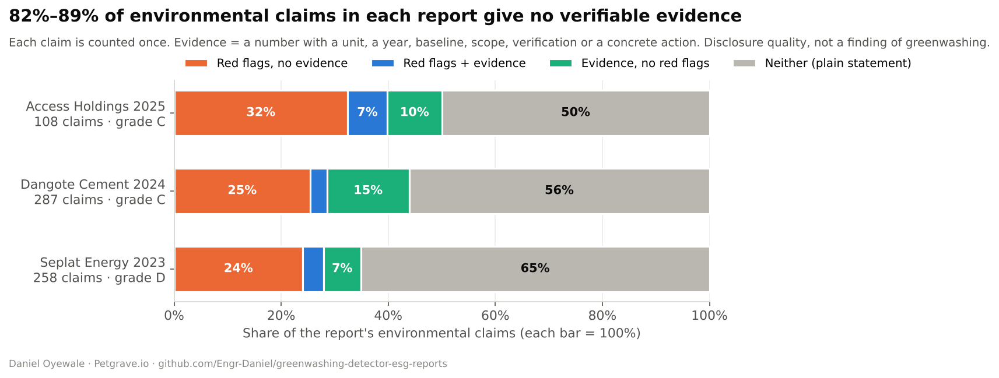
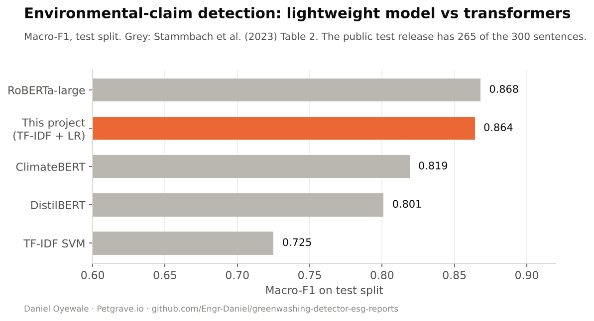
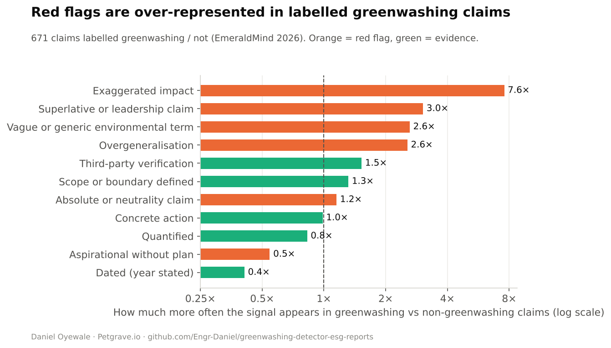

Key results
The headline numbers.
What the analysis shows
Findings, and what they mean for decision-makers.
- 1
A lightweight model can match transformers
TF-IDF + logistic regression reaches macro-F1 0.864 on the expert-labelled test set, on par with RoBERTa-large and fast enough to host for free.
- 2
Red flags track greenwashing
Exaggerated impact appears 7.6× more often in labelled greenwashing claims, superlatives 3.0× and vague green terms 2.6×.
- 3
Most claims in Nigerian reports can't be checked
Across Access Holdings 2025, Dangote Cement 2024 and Seplat Energy 2023, 82–89% of environmental claims carry no number, baseline, scope or verification.
- 4
Targets lack baselines
Of 11 measurable targets found, only one states a baseline year, which IFRS S2 requires.
Charts
Click any chart to open it full size.



How it works
Full methodology, tests and code are on GitHub.
- Read the PDFpypdf extraction, cleaning and sentence splitting, with tables and infographics filtered out
- Detect claimsWord + character TF-IDF, logistic regression, trained on 2,647 expert-labelled sentences
- Score specificity13 transparent signals, each tied to EU 2024/825, the CMA Green Claims Code, the GHG Protocol or IFRS S2
- Language riskA model trained on 671 claims labelled greenwashing or not (EmeraldMind 2026)
- Targets and auditTarget year, baseline, % and scope extraction, a report grade and a printable audit note
Tech stack
Pythonscikit-learnpypdfpandasPlotlyStreamlitAnthropic API (optional)pytestGitHub ActionsData & references
- Stammbach et al. (2023) Environmental Claim Detection, ACL
- EmeraldMind (2026), Apache 2.0
- EU Directive 2024/825 (Empowering Consumers)
- UK CMA Green Claims Code
- GHG Protocol · ISSB IFRS S2
- Access Holdings, Dangote Cement and Seplat Energy sustainability reports
Limitations: Measures language, not truth · the language-risk model is trained on short, partly synthetic claims · PDF extraction misses tables and scanned pages · English only.
More projects
Part of a data, strategy and sustainability portfolio.